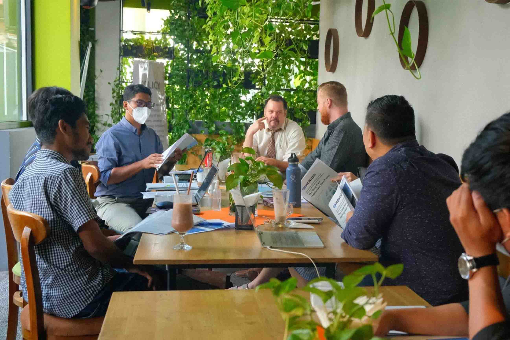
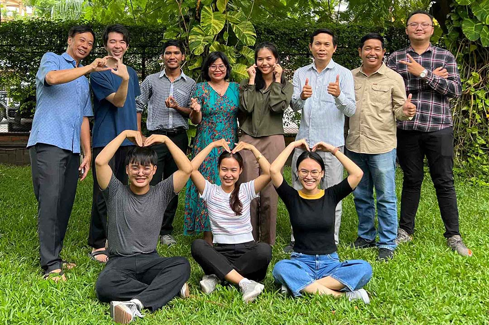
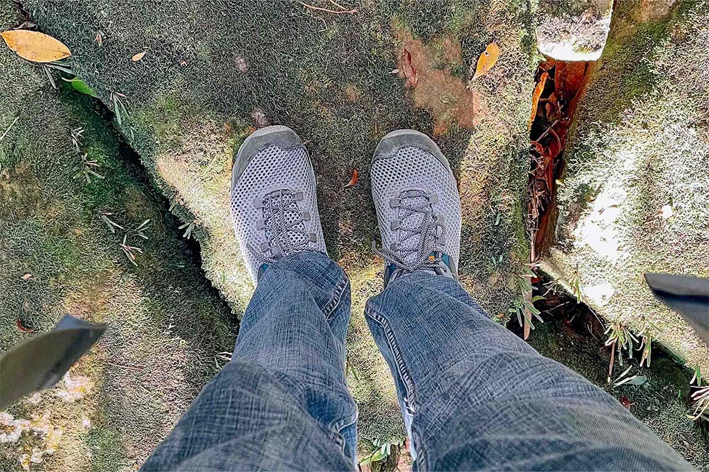
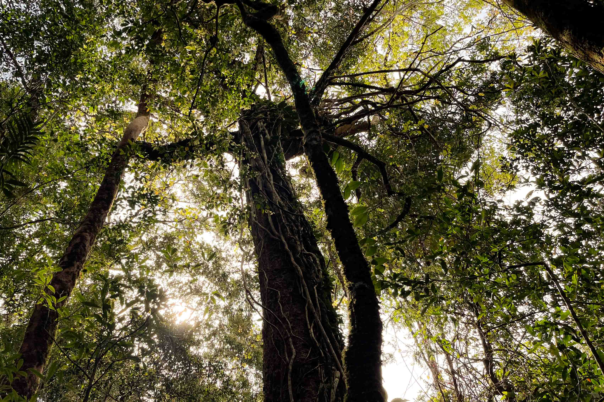
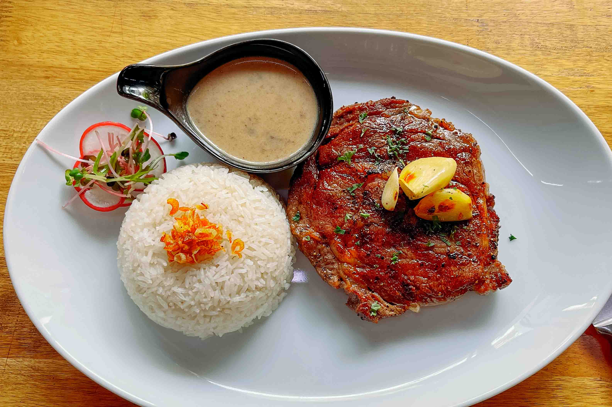

Personal
Explore my professional and personal life through photos, capturing moments from my research projects, and the special memories shared with friends and family.

Research Activities
Rich learning and research experiences that provide a broad foundation and deep insights into macroeconomic development.
Explore the World
Travel the world through work, volunteering, and vacations to discover new places, cultures, and experiences.

Friends and Colleagues
Best friends and brilliant colleagues who share experiences with me throughout the progress of my research and personal life.

Traveling by Foot
The collection of images depicts my travels, where I either walked from one place to another or used walking as a means to access other forms of transportation.

Tree Collections
This is a collection of tree images that I captured over the past year, capturing from mountain areas to rainforests, as well as rural and urban areas.

Local Foods
The local food offers a delightful culinary journey, primarily showcasing the freshest ingredients sourced directly from nearby farms and producers.